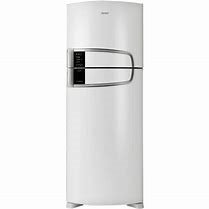

R$ 200
Design único com puxador ergonômico e integrado: design moderno que combina com a cozinha. Puxador embutido, bonito e fácil de limpar. Novo Controle externo da temperatura: facilita o ajuste da temperatura do refrigerador sem precisar abrir a porta. Bonito, resistente e fácil de usar. Prateleira Porta-latas reversível para 5 unidades: organização e flexibilidade para acomodar e melhorar o aproveitamento interno do refrigerador. Gaveta Extrafria: ideal para resfriar bebidas e alimentos rapidamente. Degelo prático: basta pressionar o botão para descongelar, sem precisar desligar o refrigerador. Após o degelo, ele volta a funcionar automaticamente. Gavetão transparente para frutas e legumes: prático, facilita a visualização dos alimentos e organiza melhor o espaço interno do refrigerador. Porta-ovos removível para 12 unidades: Organiza os ovos, melhorando o aproveitamento interno e facilitando a limpeza. Prateleiras aramadas removíveis com altura regulável: Melhor aproveitamento de alimentos e recipientes de alturas variadas. Prateleira funda na porta do refrigerador: Espaço para garrafas de até 2,5 litros. Mais segurança e organização e melhor aproveitamento do espaço interno. Pés niveladores dianteiros e rodízios traseiros: Praticidade para nivelar e movimentar. Iluminação interna: Mais comodidade e praticidade. Prateleiras da porta do refrigerador: 100 removíveis, bonitas e fáceis de limpar.